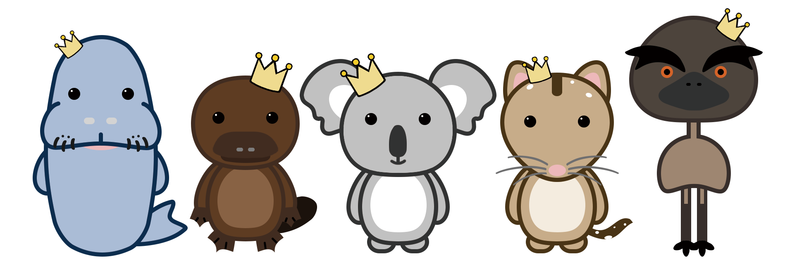
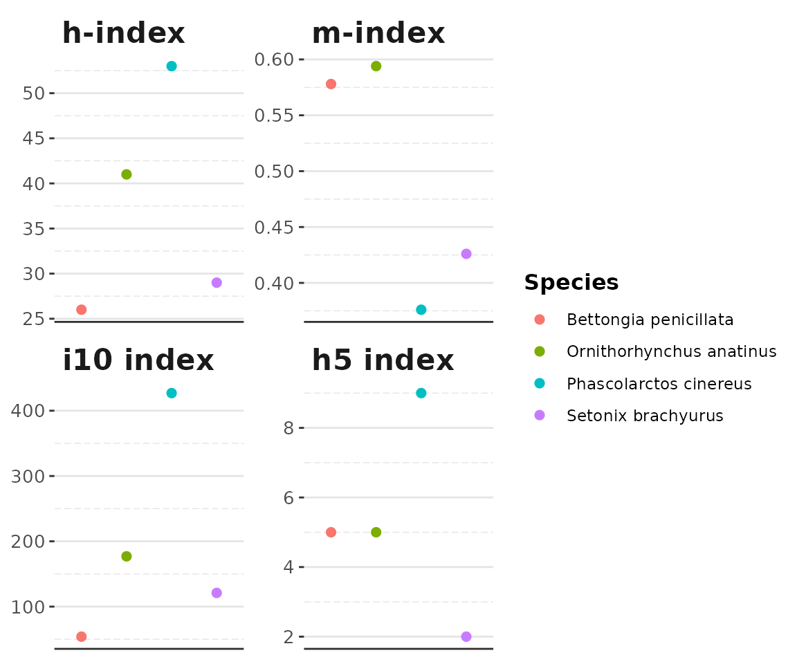
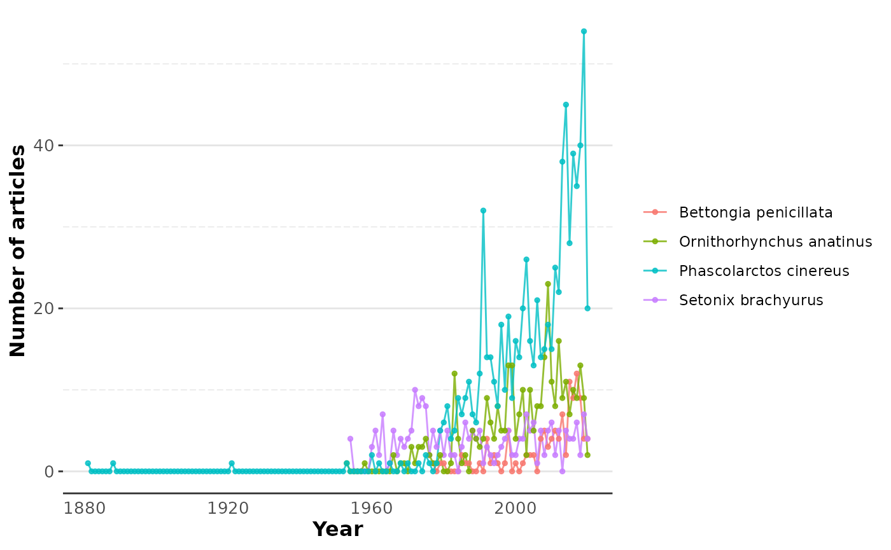

Introduction to specieshindex
Jessica Tam, Malgorzata (Losia) Lagisz, Shinichi Nakagawa, Will Cornwell
April 26, 2022
Source:vignettes/specieshindex.Rmd
specieshindex.Rmd
There are many ways to gauge research influence. We can simply sum up the number of publications or citations, which is a straight forward way without the need of any complicated mathematical formulas. On the other hand, there are more in-depth ways of quantifying research influence by using statistical indices. Some examples include the h-index, m-index, i10 index, h5 index, etc.
Hirsch’s h-index (Hirsch 2005) is one of the main methods to measure publication influence objectively. It is calculated using the formula h = total publications (n) that have at least been cited n times, after sorting the publications by their citation counts in a descending order.
Currently, the h-index is commonly used for assessing influence and academic productivity of authors, research institutions and journals (Braun, Glänzel, and Schubert 2005). Recently, this index has been also applied to quantify the research effort and influence associated with different species of living organisms (Fleming and Bateman 2016).
With this package, we can create a similar profile for different living organisms that would show their citation metrics, including total publications, total citations, h-index, etc. This will allow us to understand which species are receiving more research interest and develop the solutions to rectify the biases.
Installation
To get this package to work, make sure you have the following packages installed.
# Installation from GitHub
install.packages("rscopus")
install.packages("wosr")
install.packages("rbace")
install.packages("taxize")
install.packages("XML")
install.packages("httr")
install.packages("dplyr")
install.packages("data.table")
install.packages("tidyr")
remotes::install_github("jessicatytam/specieshindex", build_vignettes = TRUE, dependencies = TRUE)
# Load the library
library(specieshindex)
# See the vignette
vignette("specieshindex")Workflow
specieshindex performs two main steps that simplify calculating h-indices for different species:
- Connecting to a literature database and downloading citation data for a given species
- Computing various indices (including h-index) for a given species
Below, we outline how to perform these steps using our package.
Connecting to Scopus
Scopus is one of the most extensive inter-disciplinary literature database that includes peer-reviewed journal articles, books, conference proceedings, and more. Functions that extract data will only run if you or your institution are a paid subscriber. Make sure you are connected to the internet via institutional access or acquire a VPN from your institution if you are working from home.
Before initiating the retrieval of any data, make sure you have registered an API key from Scopus. Otherwise, the functions will not run (and is in fact illegal to download the data). You can register your key here following these steps:
- Go to https://dev.elsevier.com/ and click on the button
I want an API key. - Create an account and log in.
- Go to the
My API Keytab on top of the page and clickCreate API Key. - Read the legal documents and check the boxes.
Using your API key securely
After acquiring your key, make sure to store it safely. The following steps will enable you to save it as an environment variable, without saving it in the console or script.
file.edit("~/.Renviron")This will bring up an empty file, which is where you will save your key into.
Elsevier_API = "a_long_string"Restart your session for this to work. To retrieve your key, use Sys.getenv():
Sys.getenv("Elsevier_API")
#> [1] "a_long_string"You can then load it to your environment as follows:
apikey <- Sys.getenv("Elsevier_API")Connecting to Web of Science
An alternative to Scopus for literature search is Web of Science. No key is needed to extract data from Web of Science if you are using this package from your institution’s location. You will need to set up your session ID before gaining access to the Web of Science database. Run the following line of code to do so:
sid <- auth(username = NULL, password = NULL)You won’t have to set your ID again until your next session. You are required to be at your institution for this to work since the API is accessed via the IP address.
Connecting to BASE
Bielefeld Academic Search Engine (BASE) is a literature database that contains both scholarly and grey literature. Since it does not provide citation information, data extraction is not available. Before connecting to BASE, make sure you have your IP address whitelisted. You can do it here. A token or API key, however, is not required.
Making requests
Count requests
The searches are performed using species Latin name. The relevant functions take either a Latin binominal species name as their main parameters, e.g. “Bettongia”, “penicillata”, or their genus name, e.g. “Bettongia”. Make sure you are using binomial names instead of common names as required by the code.
We have implemented functions that check the available number of relevant records (Count()) and functions that download these records (Fetch()) for a given species. specieshindex supports multiple databases, including Scopus, Web of Science, and BASE. To differentiate between them, you can change the db parameter. You can set search = "t" for search terms in the title only and search = "tak" for search terms in the title, abstract, or keywords. For genus-level searches, leave the species parameter empty.
We recommend that you run a quick search using the Count() function before running Fetch() to extract any data since this can be a tedious process for searches with many results. Both functions give a search count of the number of records found on the databases.
Here are some variations of Count() connecting to Scopus:
Additional keywords
There is an optional parameter additionalkeywords that can be included to make your search more precise. This is achieved by expanding your query string and restrict the search to records that include specified combination of the additional keywords. The additional keywords can be a single word, e.g. “conservation”, or you can parse a string with Boolean operators, e.g. “conserv* OR protect* OR reintrod* OR restor*”. The Boolean operator “AND” has already been implemented in the code to link the Latin name and the additional string. To learn more about search language, you can visit here and here.
Here are some examples of searches including additional keywords:
Count(db = "scopus",
search = "t",
genus = "Bettongia", species = "penicillata",
additionalkeywords = "(consrv* OR protect* OR reintrod* OR restor*)")
Count(db = "wos",
search = "tak",
genus = "Bettongia",
additionalkeywords = "(popul* W/5 ecolog*)")
Count(db = "base",
search = "t",
genus = "Osphranter", species = "rufus",
synonyms = "Macropus rufus",
additionalkeywords = "(breed* OR reprod* OR fertil* OR fecund*)")
Count(db = "wos",
search = "t",
genus = "Osphranter",
synonyms = "Macropus",
additionalkeywords = "(popul* AND NOT popular)")
Count(db = "base",
search = "tak",
genus = "Bettongia", species = "penicillata",
additionalkeywords = "NOT (phylog* OR taxonom*)")If no additional keywords are parsed, the extraction will include all publications related to the species.
Synonyms
Some species have had their classification changed in the past, resulting in multiple names and synonyms. Synonyms can be added to the search strings to get the maximum hits. If you have more than 1 synonym, you can parse a list (the list should be named “synonyms”) into the argument.
Count(db = "scopus",
search = "t",
genus = "Osphranter", species = "rufus",
synonyms = "Macropus rufus",
additionalkeywords = "conserv*")Extracting citation records
In the examples proceeding, I will be using species names instead of genus, and setting db = "scopus". Setting search = "tak should yield more results since it also looks for the binomial name in the abstract and keywords, in addition to the title. Now that you know exactly how many publications there are for this species, and it is greater than 0, you can proceed to fetch the data. If your record count is 0, there might be a problem with the Latin name of the species, e.g. a typo.
As you may expect, some species have been studied more than the others (Simko 2015; Krause and Robinson 2017), resulting in more publications. Therefore, if there are more than a few thousand citation records found, it will take a considerably longer time to download them all, unless you are using a computer with high processing power and fast internet connection.
For example, you can run:
# Title only
Fetch(db = "scopus",
search = "t",
genus = "Bettongia", species = "penicillata")
#Title, abstract, or keywords
Fetch(db = "scopus",
search = "tak",
genus = "Bettongia")Similar to the Count functions above, Fetch functions also have the argument additionalkeywords that allows you to refine your search.
For example, you can run:
Fetch(db = "scopus",
search = "t",
genus = "Bettongia", species = "penicillata",
additionalkeywords = "(consrv* OR protect* OR reintrod* OR restor*)")
Fetch(db = "wos",
search = "tak",
genus = "Bettongia",
additionalkeywords = "(popul* W/5 ecolog*)")
Fetch(db = "scopus",
search = "t",
genus = "Osphranter", species = "rufus",
synonyms = "Macropus rufus",
additionalkeywords = "(breed* OR reprod* OR fertil* OR fecund*)")
Fetch(db = "wos",
search = "tak",
genus = "Osphranter",
synonyms = "Macropus",
additionalkeywords = "(popul* AND NOT popular)")
Fetch(db = "scopus",
search = "tak",
genus = "Bettongia", species = "penicillata",
additionalkeywords = "NOT (phylog* OR taxonom*)")In larger datasets, duplicates may appear, although usually in low numbers. It is up to the user to decide which documents to keep or remove.
Adding language as a variable (Scopus only)
The default of the parameter language is set to 0. To retrieve the language for each document, set language = 1. This will create an extra variable called ‘language’ in the output. Since it adds language as an extra field to the Scopus query, it will take longer to download the records as opposed to the default setting. This will also create a few duplicated records. Again, it is up to the user to decide which documents to exclude afterwards.
For example, if you want to retrieve documents with the language variable, you can run:
Fetch(db = "scopus",
search = "t",
genus = "Ailuropoda", species = "melanoleuca",
language = 1)Possible errors
If the error Bad Request (HTTP 400) occurs in this step, try connecting to the internet via institutional access, instead of the one at home. This error might be caused by some authorisation issues.
It is important to make sure you have spelt the species or genus name accurately when entering the function. If unsure, you can go to the The Catalogue of Life, Integrated Taxonomic Information System, National Center for Biotechnology Information, or Encyclopedia of Life for verification. These databases are where the above functions are linked to for checking via the package taxize (Chamberlain and Szöcs 2013). If the desired species or genus is not in the index, it is possible that it has just been discovered and not officially listed yet, or the name has been changed and is no longer in use. Whether or not old synonyms are accepted depends on if they exist in the databases.
Simple counts
These functions do simple calculations with various parameters for the sets of downloaded citations for a given species. This information could provide insights into the behaviour of the other, more complicated, indices.
TotalPub() sums up the total publications from the search.
For example:
TotalPub(Woylie)
#> [1] 113TotalCite() sums up the total citations of all the records from the search.
For example:
TotalCite(Woylie)
#> [1] 1903TotalJournals() counts the number of unique journals that the species have appeared in.
For example:
TotalJournals(Woylie)
#> [1] 55SourceType counts the total number of items for each document type.
For example:
SourceType(Woylie)
#> Article Review
#> 1 110 3YearsPublishing() counts the number of years since the first publication of the species.
For example:
YearsPublishing(Woylie)
#> [1] 45Statistical indices
Statistical indices can provide deeper insights than the simple counts and ratios described above. They take a few parameters into consideration, such as time, total citations, total publications, and their distributions, to compute the index. Here we implemented the following statistical indices of research impact for species: h-index, h5 index, m-index, and the i10 index.
Use SpHindex() to compute the h-index (Hirsch 2005) for a given set of records. It sorts the citation counts in descending order and then finds the largest number of publications (n) that have EACH been cited at least n times.
For example:
SpHindex(Woylie)
#> [1] 26The h5 index computes the h-index for the past 5 years.
For example:
SpH5(Woylie)
#> [1] 5You can calculate h-index for publications published after a certain date. To subset the time with a specific lower limit, you can use SpHAfterdate(). Make sure the date parameter is in the exact format of yyyy-mm-dd. Using a different format or using slashes or hyphens will return an error.
For example:
SpHAfterdate(Woylie, "2000-01-01")
#> [1] 20The m-index is an h-index adjusted for the age of publication. The m-index is calculated using the SpMindex() function, which first computes the h-index and then divides it by the number of years of publication activity , i.e. number of years since the oldest publication in the dataset was published: \[m=h\, /\, years~publishing\]
For example:
SpMindex(Woylie)
#> [1] 0.578The i10 index is another variant of the h-index, which only takes into account publications with at least 10 citations. The i10 index can be calculated using Spi10(), which simply counts the publications that has 10 or more citations.
For example:
Spi10(Woylie)
#> [1] 54All indices in one go
Rather than calling each function to calculate the indices in turn, you can get them all in one go. The Allindices() function conveniently returns a dataframe with most of the above indices. This allows for quick creation of dataframes with multiple species, analyses and plotting.
For example:
Allindices(data = Woylie,
genus = "Bettongia", species = "penicillata")
#> genus_species species genus publications citations journals
#> 1 Bettongia penicillata penicillata Bettongia 113 1903 55
#> years_publishing h m i10 h5
#> 1 45 26 0.578 54 5There is an additional argument sourcetype with the default set to sourcetype = 0. If set to sourcetype = 1, the output of Allindices() will include the output of SourceType().
For multiple species, rbind() (or dplyr::bind_rows() if sourcetype = 1) can be used to stitch the outputs together, which will be used below.
Worked examples with Scopus
To demonstrate how the specieshindex package could be helpful in the real world, I will be comparing the citations of 4 species of marsupials. They are the woylie (Bettongia penicillata), quokka (Setonix brachyurus), platypus (Ornithorhynchus anatinus), and koala (Phascolarctos cinereus).
Woylie <- Fetch(db = "scopus",
search = "tak",
genus = "Bettongia", species = "penicillata")
Quokka <- Fetch(db = "scopus",
search = "tak",
genus = "Setonix", species = "brachyurus")
Platypus <- Fetch(db = "scopus",
search = "tak",
genus = "Ornithorhynchus", species = "anatinus")
Koala <- Fetch(db = "scopus",
search = "tak",
genus = "Phascolarctos", species = "cinereus")
dim(Woylie)
#> [1] 113 20
dim(Quokka)
#> [1] 242 20
dim(Platypus)
#> [1] 321 20
dim(Koala)
#> [1] 773 20As shown here, there were 113 records (publications) for the woylie, 242 records for the quokka, 321 records for the platypus, and 773 records for the koala. They all have a total of 20 variables, e.g. citations, journals, DOI, etc., representing bibliometric information downloaded from Scopus for each publication. I have skipped the steps of fetching the data from Scopus since it had already been demonstrated above.
Visualising the data
Next, we calculate research productivity and influence indices using the Allindices() function:
W <- Allindices(data = Woylie,
genus = "Bettongia", species = "penicillata")
Q <- Allindices(data = Quokka,
genus = "Setonix", species = "brachyurus")
P <- Allindices(data = Platypus,
genus = "Ornithorhynchus", species = "anatinus")
K <- Allindices(data = Koala,
genus = "Phascolarctos", species = "cinereus")If you want to compare and analyse them against each other, you can use the function rbind() to combine indices for all four species into a single dataframe:
CombineSp <- dplyr::bind_rows(W, Q, P, K) #combining the citation records
CombineSp
#> genus_species species genus publications citations
#> 1 Bettongia penicillata penicillata Bettongia 113 1903
#> 2 Setonix brachyurus brachyurus Setonix 242 3427
#> 3 Ornithorhynchus anatinus anatinus Ornithorhynchus 321 6365
#> 4 Phascolarctos cinereus cinereus Phascolarctos 773 14291
#> journals years_publishing h m i10 h5
#> 1 55 45 26 0.578 54 5
#> 2 107 68 29 0.426 121 2
#> 3 153 69 41 0.594 177 5
#> 4 227 141 53 0.376 427 9After preparing the data, we are ready to make some plots. The in-built function plotAllindices() plots the h-index, m-index, i10 index, and h5 index in a grid. When comparing the indices, it is important to remember that their scales may differ drastically. Therefore, putting the variables in the same plot may generate plots that do not make a lot of sense. However, this is an efficient way of visualising your data with only 1 line of code.
plotAllindices(CombineSp)
Figure 1. The h-index, m-index, i10 index, and h5 index of the Woylie (Bettongia penicillata), Platypus (Ornithorhynchus anatinus), Koala (Phascolarctos cinereus), and Quokka (Setonix brachyurus).
To see the total output by year, you can use the functions getYear() and plotPub(). Below is an example using the same datasets as above. First, we need to extract the year from the output of Fetch() (or any other Fetch functions) with getYear(). Remember to supply the binomial name of the species.
extract_year_W <- getYear(data = Woylie,
genus = "Bettongia", species = "penicillata")
extract_year_W
#> # A tibble: 44 × 3
#> Year Freq spp
#> <dbl> <int> <chr>
#> 1 1977 1 Bettongia penicillata
#> 2 1978 0 Bettongia penicillata
#> 3 1979 1 Bettongia penicillata
#> 4 1980 1 Bettongia penicillata
#> 5 1981 0 Bettongia penicillata
#> 6 1982 0 Bettongia penicillata
#> 7 1983 0 Bettongia penicillata
#> 8 1984 0 Bettongia penicillata
#> 9 1985 2 Bettongia penicillata
#> 10 1986 1 Bettongia penicillata
#> # … with 34 more rowsIf you have multiple species to visualise, you can combine them with using rbind().
extract_year_Q <- getYear(data = Quokka,
genus = "Setonix", species = "brachyurus")
extract_year_P <- getYear(data = Platypus,
genus = "Ornithorhynchus", species = "anatinus")
extract_year_K <- getYear(data = Koala,
genus = "Phascolarctos", species = "cinereus")
Combine_pub <- rbind(extract_year_W, extract_year_Q, extract_year_P, extract_year_K)To plot the output, simply use the plotPub() function.
plotPub(Combine_pub)
Figure 2. The total number of publications per year of the Woylie (Bettongia penicillata), Platypus (Ornithorhynchus anatinus), Koala (Phascolarctos cinereus), and Quokka (Setonix brachyurus).
You can add a custom colour palette of choice for further customisation.
Concrete example
To see a concrete example, Tam et al. (2021) has applied this package to study taxonomic bias among mammals by quantifying the scientific interest of 7,521 species of mammals.

Figure 3. Species h-index of mammals with a species h-index of h = 100 and larger (adapted from Tam et al. (2021)).
Limitations
Currently, the input option for search requests is limited to species Latin names. Although common names are synonymous with the binomial names, they are comparatively much less explicit. There could be multiple species using the same common name, which will require extra steps to specify which is the particular species that is being studied. Moreover, there are other fields of research that use species’ common names in the titles of their work without meaning the actual species, e.g. as a product/project name.
Although genus-level searches are enabled, users should be cautious of duplicated genus names across different clades. This is because of homonymous (Remsen 2016) genus names between some plant and animal taxa. For example, the genus Prunella represents both a taxon of herbaceous plants and passerines. Additional parameters will have to be added to identify the exact taxon in question in the future.
Finally, access to databases depends on location and whether or not your institution is a subscriber of said database. Scopus requests must be sent via a subscriber’s internet provider. This include universities and individuals who have paid for annual Scopus subscription. This is easily addressed by connecting to your institution’s network. Hence, it might not work at all if you are working from home. The error Bad Request (HTTP 400) will be returned in this case. Web of Science requests must be sent from the IP address of your institution, else the user is required to register for an account. BASE requests can only be made via a location where the IP address has been white-listed.
Implications and future uses
Although the development of this package is still in its infancy, it is nonetheless a valuable tool for researchers looking to examine research biases between species. Some functions that could be added in the future include search requests for higher classification levels, e.g. class, order, etc., and to include other emerging indices that are being used to calculate research influence. The results of the species h-index will show us the research interest each taxon receives. More investigations will then follow to explore the reasons why and how the knowledge gap affected species conservation and the depth of understanding we have for them.
Acknowledgements
I acknowledge the contributions of the authors of the dependency packages: rscopus, wosr, rbace, taxize, XML, httr, dplyr, data.table, tidyr. specieshindex is enabled by Scopus, Web of Science, and BASE.
References
Braun, T., W. Glänzel, and A. Schubert. 2005. “A Hirsch-Type Index for Journals [1].” Scientist 19 (22): 8. https://www.scopus.com/inward/record.uri?eid=2-s2.0-28944445322&partnerID=40&md5=9f03ec93906f77c8de67db2d6fe506e8.
Chamberlain, S. A., and E. Szöcs. 2013. “Taxize: Taxonomic Search and Retrieval in R.” F1000Research 2. https://doi.org/10.12688/f1000research.2-191.v2.
Fleming, P. A., and P. W. Bateman. 2016. “The Good, the Bad, and the Ugly: Which Australian Terrestrial Mammal Species Attract Most Research?” Mammal Review 46 (4): 241–54. https://doi.org/10.1111/mam.12066.
Hirsch, J. E. 2005. “An Index to Quantify an Individual’s Scientific Research Output.” Proceedings of the National Academy of Sciences of the United States of America 102 (46): 16569–72. https://doi.org/10.1073/pnas.0507655102.
Krause, M., and K. Robinson. 2017. “"Charismatic Species and Beyond: How Cultural Schemas and Organisational Routines Shape Conservation".” Conservation and Society 15 (3): 313–21. https://doi.org/10.4103/cs.cs_16_63.
Remsen, David. 2016. “The Use and Limits of Scientific Names in Biological Informatics.” ZooKeys 550: 207–23. https://doi.org/10.3897/zookeys.550.9546.
Simko, I. 2015. “Analysis of Bibliometric Indicators to Determine Citation Bias.” Palgrave Communications 1. https://doi.org/10.1057/palcomms.2015.11.
Tam, Jessica, Malgorzata Lagisz, William K Cornwell, and Shinichi Nakagawa. 2021. “Quantifying Research Interests in 7,521 Mammalian Species with H-Index: A Case Study.” EcoEvoRxiv. https://doi.org/10.32942/osf.io/gd7cv.